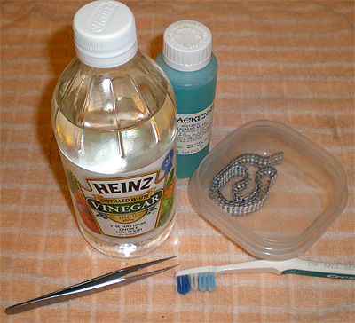

For use on white metal parts, copper and brass.
Images and text Copyright © 2008 by Matt Swan
Friulmodel Tracks availible from Great Models Web Store
Blacken-It from A-West
For use on white metal parts, copper and brass.
Images and text Copyright © 2008 by Matt Swan
Friulmodel Tracks availible from Great Models Web Store
This is an interesting product that has been used in the model railroad sector for a little while and has some practical applications for modelers, especially armor modelers. This is a potent little blend of acids designed to cause a reaction on the metal surface and blacken it, hence the name, Blacken-It. Blacken-It is a metal oxidizer that works great on brass and white metal (pewter) castings. It is a lightweight version of what is used in the jewelry industry to add an aged patina to silver jewlery. The effect on white metal parts is not so much as black but a very dark brownish color that looks like weathered and slightly rusted metal, just perfect for tank tracks.
I’m going to experiment with this product on some Friulmodel metal tracks for a 1/48 Russian KV-1. When building tanks the tracks have always been the bottle-neck for me, I could never get a result that I liked. First thing that I need to do is assemble the tracks. With this kit Friulmodel gives us ninety left and ninety right side track links and a good dozen spares for that eventual screw-up and for spare sections to mount on your model. The Friulmodel instructions are brief at best and say you may need to clean up casting spurs or drill pin holes in the links. On the one track I built I did not have to clean up anything and only had to drill maybe three links out of ninety – that ranks pretty darned good in my opinion.
Each link needs to be held together and a piece of wire pushed through the pin holes to link the pieces. I found a pair of tweezers most helpful with this task. Once the wire is fully inserted I bent it up towards the inside of the track and cut it off flush with the top track surface. Next using the tip of my razor knife I placed a very small spot of superglue on the bent up part of the wire pin and then rotated it flat onto the track edge where it pretty much disappeared. This secures the pin but lets the track flex freely. When working with 1/35 scale track links the pin inserts on a flush face so does not need to be bent but just cut off and glued. Once all the links were together which took about ninety minutes I had a very convincing looking length of track ready to get blackened.

Now we are ready to get busy with some chemistry. There are a few rules to follow when working with chemicals such as:
Establish a clean and safe work place where spills can be contained should they occur.
Use proper safety equipment such as rubber gloves and eye protection.
Establish proper ventilation.
There are three primary items that will influence how chemistry reacts to a material; time, temperature and concentration.
I have moved to the kitchen area and am working underneath a range hood with ventilation fan. I have a towel laid down on my work surface to capture any spilt liquids. I have some safety glasses and a pair of rubber dish washing gloves. Tools needed are a good plastic container to hold our solutions, a pair of tweezers to reach into the solution, some liquid dish soap, a bottle of white vinegar, an old tooth brush and some water.


1. Fill your container with warm soapy water and clean the tracks. Use the tooth brush to gently scrub the track.
2. Rinse the track in water.
3. Mix a solution of white vinegar and very warm water (not hot) about 50/50. Some people like to use straight vinegar for this step but by mixing it with very warm water you are increasing the activity level of the Glacial Acetic Acid in the vinegar. Soak the track in this solution for a couple minutes. This will gently etch the surface and allow it to accept the next treatment more easily.
4. Dry the track completely. Blow out any droplets of water/vinegar solution that may be hiding in crevasses.
5. Fill your plastic container with Blacken-It solution and place part into liquid. Make sure you are able to completely immerse the part in liquid. You will see an immediate effect. Let the part soak for about two minutes then remove with tweezers.
6. Rinse part with cool tap water.
7. Let part dry.
From what I can see at this point the blackened surface seems very stable and does not want to rub off on my fingers. The coloration looks better than anything I’ve done before on a tank track with paint. If you want to darken this more you can treat a second time. If you are working with brass or copper you may experience some slight flaking and will need to repeat the process at least twice for good results. Once the part is dry I took some 800 grit sandpaper and went over it lightly to bring out some shiny metal areas to simulate chipping and surface abrasions.
This looks to be a pretty nifty product that will add a new level of realism to any armor build. I can see several applications for it wherever a modeler is using white metal parts, brass parts or copper parts and needs to create a weathered and well used appearance to the metal. The modeler could also use this on metal parts that are going to be painted then chipped. This would result in a more weathered looking piece of metal showing through the paint chip than a shiny piece of metal. Remember, this is an acid blend and does carry a certain risk as a result, use proper safety equipment and care. While the warning label on the bottle did mention fumes I was not able to detect any fumes or odor. Do not allow this to be handled by children.